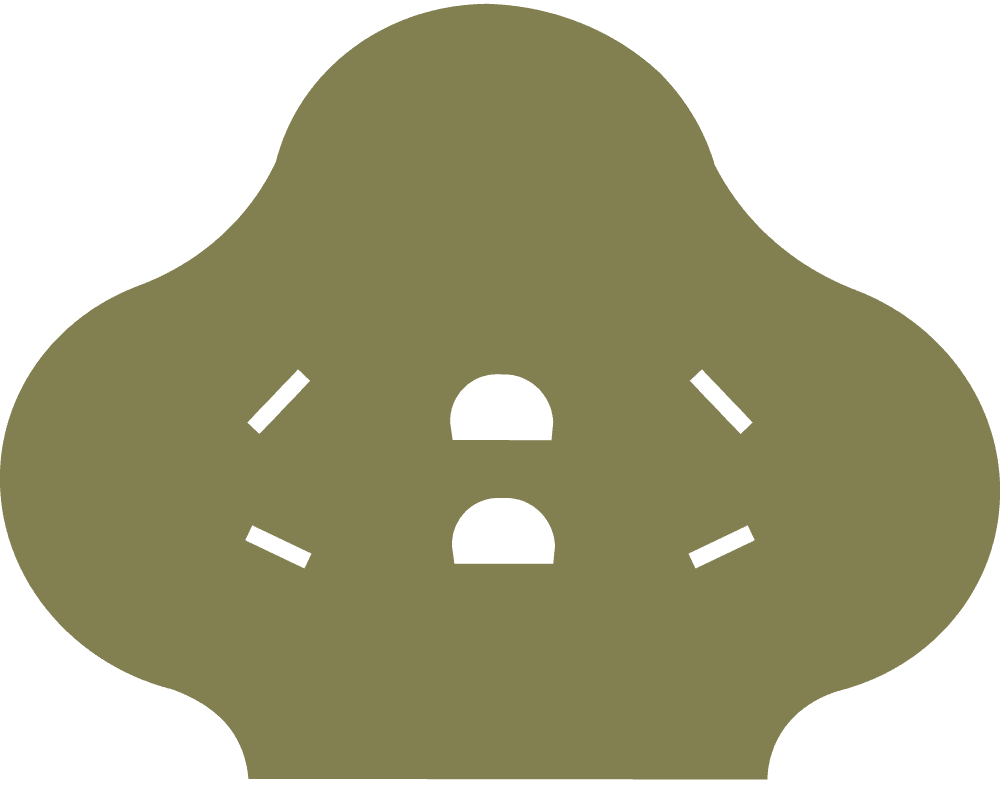
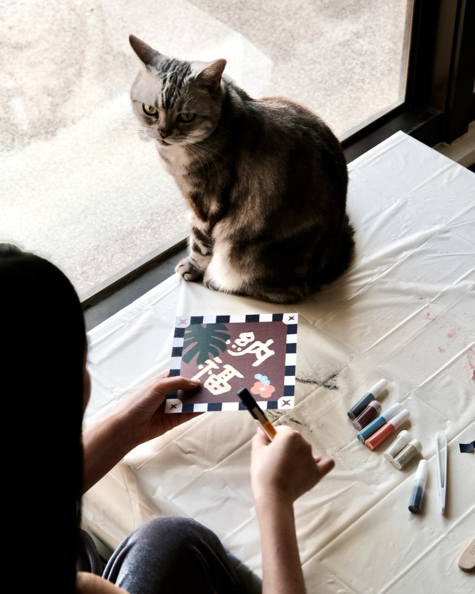
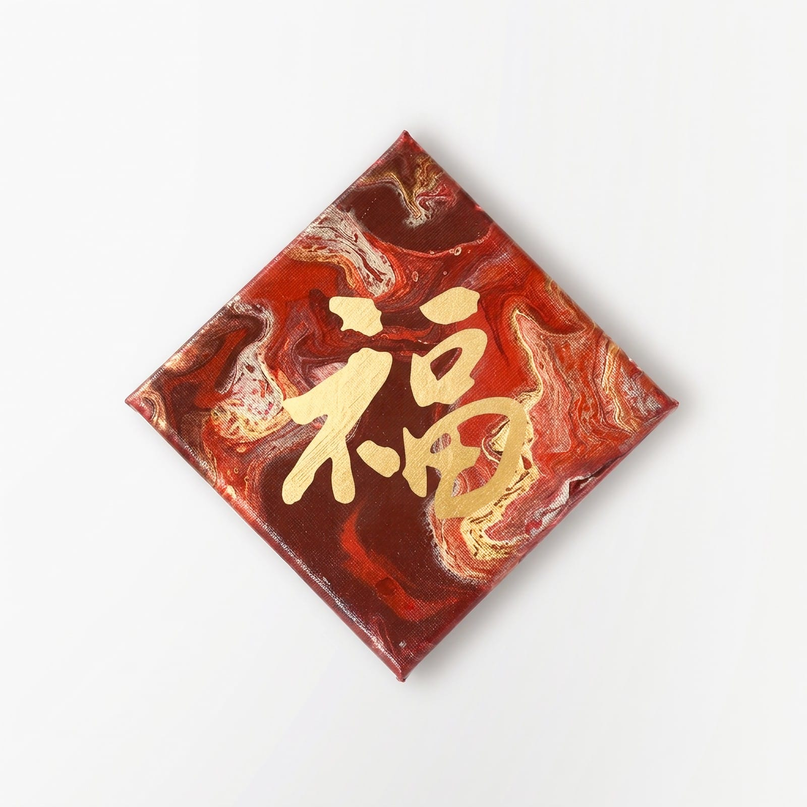
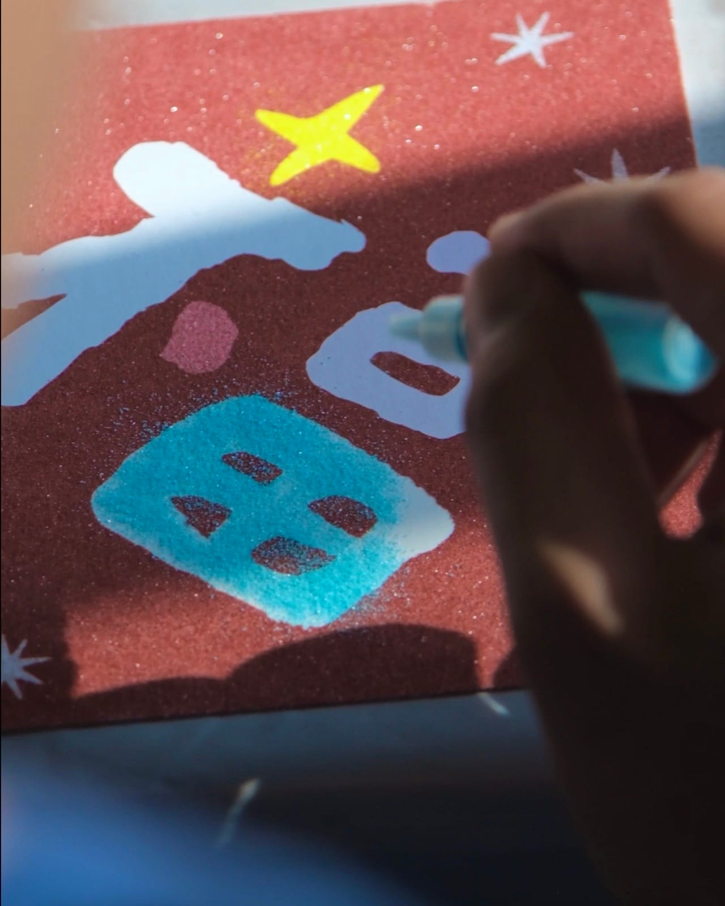
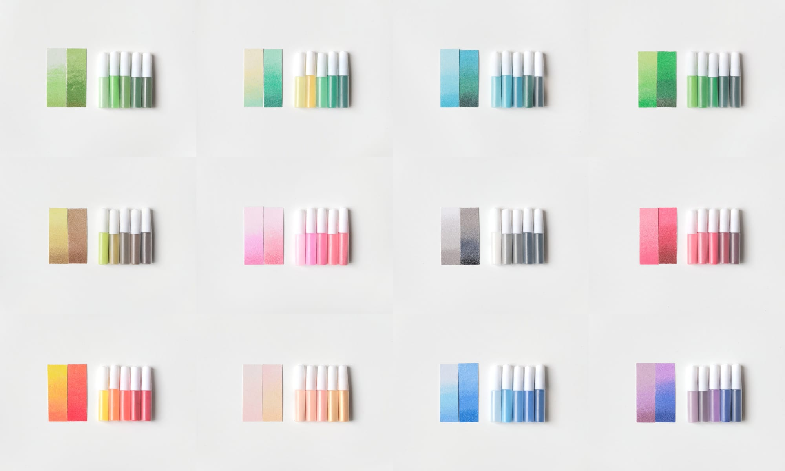

一份禮，不只迎新，也留住一段節氣的美好。
如果你已經對制式的新春禮盒提不起興趣，
今年，換一種方式迎接新年。

撕貼紙、倒沙、鋪色，這些原本只在畫室課堂上才會碰到的技法，我們把它拆解成在家也能照著順序完成的步驟。不需要畫畫基礎，材料跟工具都準備好了，剩下的就是坐下來，花一段時間好好完成一幅屬於自己的作品。
一個人靜靜完成，或是全家人、朋友圍在一起各自動手，都是材料包本來的樣子。

倒色之後顏料會自己流動、交融出紋理，貼上文字貼紙前需要靜置約 24 小時讓顏料完全乾燥定型。很適合在家操作，找個不會被打擾的角落放著，不用急著收，慢慢等它乾燥就好。

分層倒沙、鋪色，比較精細的區塊需要小心操作，小朋友建議由大人在旁協助。完成的當下就是成品，不用等乾燥，很適合朋友小聚、做完直接帶回家。顏色怎麼搭配、填色位置怎麼安排都能自己決定，所以也提供比較多種加購材料，方便依照喜好調整。
撕開、倒沙、鋪色，每一步都不難，難的只是願不願意坐下來開始。
傳統春聯斗方，換一種新的形式留下來。
加購配件
12 組漸層色任選
